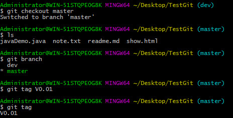
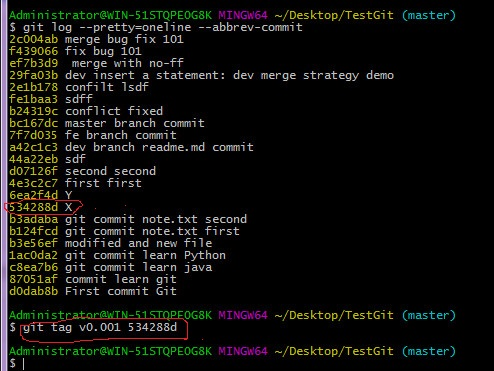
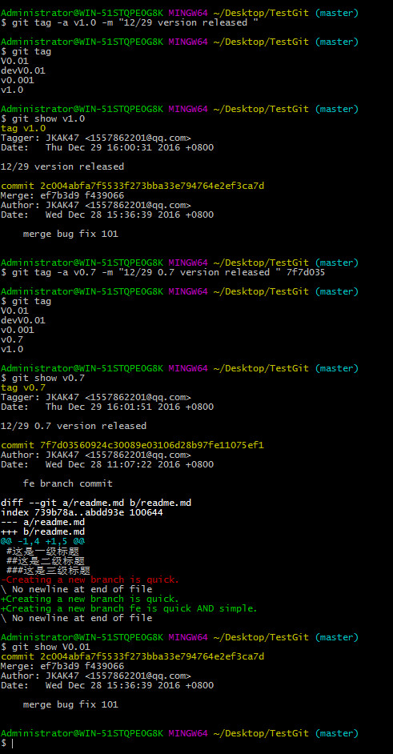
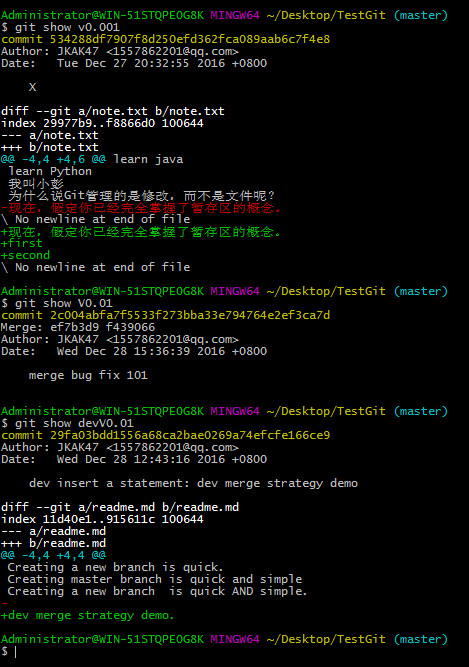
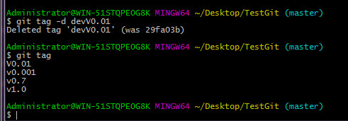
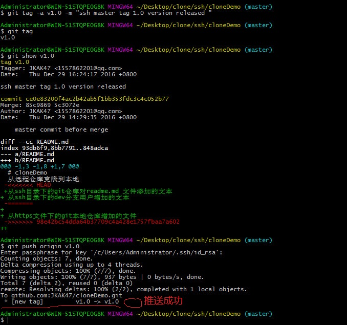

发布一个版本时，我们通常先在版本库中打一个标签（tag），这样，就唯一确定了打标签时刻的版本。将来无论什么时候，取某个标签的版本，就是把那个打标签的时刻的历史版本取出来。所以，标签也是版本库的一个快照。引入标签的目的就是一个让人容易记住的有意义的名字，它跟某个commit绑在一起。
Git的标签虽然是版本库的快照，但其实它就是指向某个commit的指针（跟分支很像对不对？但是分支可以移动，标签不能移动），可以说标签就是一个指向一个commit的常引用。所以创建和删除标签都是瞬间完成的。
3.1 创建标签
创建标签很简单，首先切换到需要打标签的分支上：然后只需要git tag xxx命令即可打标签，然后xxx只是记录了打标签之前的最新commit记录，最后通过git tag查询所打的所有标签

有时候，如果忘了打标签，比如，现在已经是周五了，但应该在周一打的标签没有打，怎么办？方法是找到历史提交的commit id，然后打上就可以了：比如给commit id为534288d；语法形式git tag tagname commitId

还可以创建带有说明的标签，用-a指定标签名，-m指定说明文字
git tag -a v1.0 -m "12/29 version released "
git tag -a v0.7 -m "12/29 0.7 version released " 7f7d035 用带commit id进行打标签
git show tagName ；命令用于检查这个tag下面的提交信息，因为一个tag对应一个commit。从git show命令也可以看出(git tag tagname commitId 命令) 上面用commit id打的标签是正确的。

3.2 管理标签
删除标签,这个标签必须还是本地git仓库下的标签，如果他推送到远程了git仓库就不是使用这个命令。
git tag -d tagname

如果标签推送到远程git仓库了，就必须用另外一个命令：
git push origin :refs/tags/tagname
因为创建的标签都只存储在本地，不会自动推送到远程。所以，打错的标签可以在本地安全删除。如果要推送某个标签到远程，使用命令
git push origin tagname：
git push origin --tags 将一次性推送所有标签到远程
下面这幅图表示了一个tag从在本地创建到push到远程origin的全过程

3.3 github
对于github上面我们喜欢的项目，一定要先从fork到自己账号下，然后在自己的账号下clone仓库，这样你才能完全具有对这个项目的修改权限。如果从bootstrap的作者的仓库地址git@github.com:twbs/bootstrap.git克隆，因为没有权限，你将不能把修改推送到github上面，然后你将你的修改推送到了github上面如果你想将新的功能推送给原作者，使用github上面的 pull request 功能，如果原作者想合并你的功能的话他就同意你的pull request请求。 Simple guide to forks in GitHub and Git
3.3 github
在Git工作区的根目录下创建一个特殊的.gitignore文件，然后把要忽略的文件名填进去，Git就会自动忽略这些文件